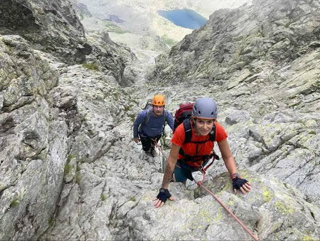

Roháče - Západné Tatry
skoc rovno na galeriu
Roháče sú najkrajšia časť Západných Tatier.
Najdes tu plesa, ostre hrebene aj kamzikov.
Je to kúsok od Oravy - ideálne na jednodňovú túru.

Čo tam uvidíš
Krajina sa počas výstupu meni
z lesa až po holé hory
- Roháčske plesá
- kosodrevinu A horské lúky
- ostrý hrebeň Troch kôp
- kamzíky a svište
Túra na Tri kopy - postup
klasicka trasa ma styri hlavne zastavky:
- parkovisko zverovka
- tatlikova ch
- smutne sedlo
- vrchol tri kopy

Galeria
 Rohacska doluna
Rohacska doluna
Viac fotiek a aktualne
pocasie najdes na oficialnej stranke -

rohace spalena
spet na uvod
mail